Transistores de Efecto de Campo JFET
*** INCOMPLETO ***
Introducción
A transistorEs un dispositivo semiconductor lineal que controla la corriente con la aplicación de una señal eléctrica de menor potencia. Los transistores se pueden agrupar a grandes rasgos en dos divisiones principales:bipolar y efecto de campo. En el último capítulo estudiamos los transistores bipolares, que utilizan una corriente pequeña para controlar una corriente grande. En este capítulo, presentaremos el concepto general del transistor de efecto de campo: un dispositivo que utiliza un pequeñoVoltajepara controlar la corriente, y luego centrarse en un tipo particular: elunióntransistor de efecto de campo. En el próximo capítulo exploraremos otro tipo de transistor de efecto de campo, elpuerta aisladavariedad.
Todos los transistores de efecto de campo sonunipolaren vez debipolardispositivos. Es decir, la corriente principal que los atraviesa está compuesta por electrones a través de un semiconductor de tipo N o por huecos a través de un semiconductor de tipo P. Esto se hace más evidente cuando se ve un diagrama físico del dispositivo:
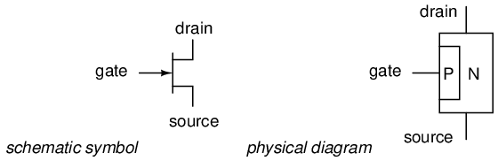
En un transistor de efecto de campo de unión, o JFET, la corriente controlada pasa de la fuente al drenaje, o del drenaje a la fuente, según sea el caso. El voltaje de control se aplica entre la puerta y la fuente. Observe cómo la corriente no tiene que cruzar a través de una unión PN en su camino entre la fuente y el drenaje: el camino (llamadocanal) es un bloque ininterrumpido de material semiconductor. En la imagen que se acaba de mostrar, este canal es un semiconductor tipo N. También se fabrican JFET de canal tipo P:
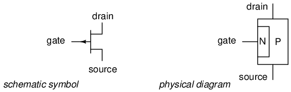
Generalmente, los JFET de canal N se utilizan más comúnmente que los de canal P. Las razones de esto tienen que ver con detalles oscuros de la teoría de los semiconductores, que preferiría no discutir en este capítulo. Al igual que con los transistores bipolares, creo que la mejor manera de introducir el uso de transistores de efecto de campo es evitar la teoría siempre que sea posible y concentrarse en las características operativas. La única diferencia práctica entre los JFET de canal N y P de la que debe preocuparse ahora es la polarización de la unión PN formada entre el material de la puerta y el canal.
Sin ningún voltaje aplicado entre la puerta y la fuente, el canal es un camino abierto para que fluyan los electrones. Sin embargo, si se aplica un voltaje entre la puerta y la fuente de tal polaridad que polariza inversamente la unión PN, el flujo entre las conexiones de fuente y drenaje se vuelve limitado o regulado, tal como lo fue para los transistores bipolares con una cantidad determinada de corriente de base. El voltaje máximo de puerta-fuente "corta" toda la corriente a través de la fuente y el drenaje, lo que obliga al JFET a entrar en modo de corte. Este comportamiento se debe a que la región de agotamiento de la unión PN se expande bajo la influencia de un voltaje de polarización inversa, ocupando eventualmente todo el ancho del canal si el voltaje es lo suficientemente grande. Esta acción puede compararse con reducir el flujo de un líquido a través de una manguera flexible apretándola: con suficiente fuerza, la manguera se contraerá lo suficiente como para bloquear completamente el flujo.
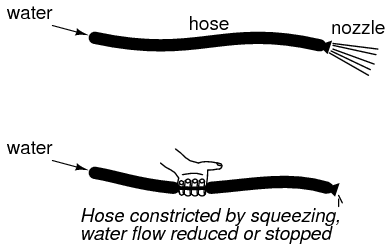
Observe cómo este comportamiento operativo es exactamente opuesto al del transistor de unión bipolar. Los transistores bipolares sonnormalmente apagadoDispositivos: sin corriente a través de la base, sin corriente a través del colector o del emisor. Los JFET, por otro lado, sonnormalmente encendidoDispositivos: ningún voltaje aplicado a la puerta permite que la corriente máxima pase a través de la fuente y el drenaje. También tenga en cuenta que la cantidad de corriente permitida a través de un JFET está determinada por unVoltajeseñal en lugar de unaseñal de corrientecomo con los transistores bipolares. De hecho, con la unión PN puerta-fuente con polarización inversa, debería haber casi cero corriente a través de la conexión de la puerta. Por esta razón, clasificamos al JFET como undispositivo controlado por voltaje, y el transistor bipolar comodispositivo controlado por corriente.
Si la unión PN puerta-fuente tiene polarización directa con un voltaje pequeño, el canal JFET se "abrirá" un poco más para permitir el paso de mayores corrientes. Sin embargo, la unión PN de un JFET no está diseñada para manejar una corriente sustancial por sí misma y, por lo tanto, no se recomienda polarizar directamente la unión bajo ninguna circunstancia.
Esta es una descripción general muy condensada del funcionamiento de JFET. En la siguiente sección, exploraremos el uso del JFET como dispositivo de conmutación.
El transistor como interruptor
Al igual que su primo bipolar, el transistor de efecto de campo se puede utilizar como interruptor de encendido/apagado que controla la energía eléctrica enviada a una carga. Comencemos nuestra investigación del JFET como un interruptor con nuestro conocido circuito de interruptor/lámpara:
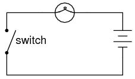
Recordando que elrevisadoLa corriente en un JFET fluye entre la fuente y el drenaje, sustituimos las conexiones de fuente y drenaje de un JFET por los dos extremos del interruptor en el circuito anterior:
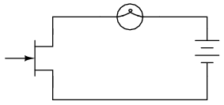
Si aún no lo ha notado, las conexiones de fuente y drenaje en un JFET parecen idénticas en el símbolo esquemático. A diferencia del transistor de unión bipolar, donde el emisor se distingue claramente del colector por la punta de flecha, las líneas de fuente y drenaje de un JFET corren perpendiculares a la barra que representa el canal semiconductor. ¡Esto no es un accidente, ya que las líneas de fuente y drenaje de un JFET suelen ser intercambiables en la práctica! En otras palabras, los JFET suelen ser capaces de manejar la corriente del canal en cualquier dirección, desde la fuente al drenaje o desde el drenaje a la fuente.
Ahora todo lo que necesitamos en el circuito es una forma de controlar la conducción del JFET. Con voltaje aplicado cero entre la puerta y la fuente, el canal del JFET estará "abierto", permitiendo que llegue corriente completa a la lámpara. Para apagar la lámpara, necesitaremos conectar otra fuente de voltaje CC entre la puerta y las conexiones de fuente del JFET de esta manera:
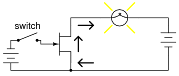
Cerrar este interruptor "pellizcará" el canal del JFET, forzándolo a cortarse y apagando la lámpara:
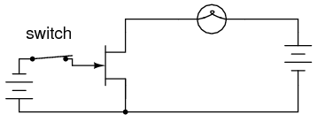
Tenga en cuenta que no pasa corriente por la puerta. Como unión PN con polarización inversa, se opone firmemente al flujo de electrones a través de ella. Como dispositivo controlado por voltaje, el JFET requiere una corriente de entrada insignificante. Esta es una característica ventajosa del JFET sobre el transistor bipolar: prácticamente no se requiere potencia de la señal de control.
Abrir nuevamente el interruptor de control debería desconectar el voltaje CC de polarización inversa de la puerta, permitiendo así que el transistor se vuelva a encender. Lo ideal es que funcione así. En la práctica, es posible que esto no funcione en absoluto:
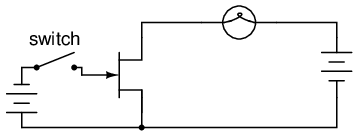
¿Por qué es esto? ¿Por qué el canal del JFET no se abre nuevamente y permite que la corriente de la lámpara pase como lo hacía antes sin aplicar voltaje entre la puerta y la fuente? La respuesta está en el funcionamiento de la unión puerta-fuente con polarización inversa. La región de agotamiento dentro de esa unión actúa como una barrera aislante que separa la puerta de la fuente. Como tal, posee una cierta cantidad decapacidadcapaz de almacenar un potencial de carga eléctrica. Después de que esta unión haya sido sometida a polarización inversa forzada mediante la aplicación de un voltaje externo, tenderá a mantener ese voltaje de polarización inversa como una carga almacenada incluso después de que se haya desconectado la fuente de ese voltaje. Lo que se necesita para volver a encender el JFET es purgar esa carga almacenada entre la puerta y la fuente a través de una resistencia:
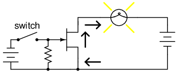
El valor de esta resistencia no es muy importante. La capacitancia de la unión puerta-fuente del JFET es muy pequeña, por lo que incluso una resistencia de purga de valor bastante alto crea una constante de tiempo RC rápida, lo que permite que el transistor reanude la conducción con poco retraso una vez que se abre el interruptor.
Al igual que el transistor bipolar, poco importa de dónde o de qué provenga el voltaje de control. Podríamos utilizar una célula solar, un termopar o cualquier otro tipo de dispositivo generador de voltaje para suministrar el voltaje que controla la conducción del JFET. Todo lo que se requiere de una fuente de voltaje para la operación del interruptor JFET essuficientevoltaje para lograr el pellizco del canal JFET. Este nivel suele estar en el ámbito de unos pocos voltios CC y se denominapellizco o cierreVoltaje. El voltaje de pellizco exacto para cualquier JFET determinado es una función de su diseño único, y no es una cifra universal como lo es 0,7 voltios para el voltaje de unión base-emisor de un BJT de silicio.
- REVISAR:
- Los transistores de efecto de campo controlan la corriente entre las conexiones de fuente y drenaje mediante un voltaje aplicado entre la puerta y la fuente. en ununiónTransistor de efecto de campo (JFET), hay una unión PN entre la puerta y la fuente que normalmente tiene polarización inversa para controlar la corriente de drenaje de la fuente.
- Los JFET son dispositivos normalmente encendidos (normalmente saturados). La aplicación de un voltaje de polarización inversa entre la puerta y la fuente hace que la región de agotamiento de esa unión se expanda, "pellizcando" así el canal entre la fuente y el drenaje a través del cual viaja la corriente controlada.
- Puede ser necesario conectar una resistencia de "purga" entre la puerta y la fuente para descargar la carga almacenada acumulada en la capacitancia natural de la unión cuando se elimina el voltaje de control. De lo contrario, es posible que quede una carga para mantener el JFET en modo de corte incluso después de que se haya desconectado la fuente de voltaje.
Verificación de un transistor con multímetro
Probar un JFET con un multímetro puede parecer una tarea relativamente fácil, ya que solo tiene una unión PN para probar: ya sea medida entre la compuerta y la fuente, o entre la compuerta y el drenaje.
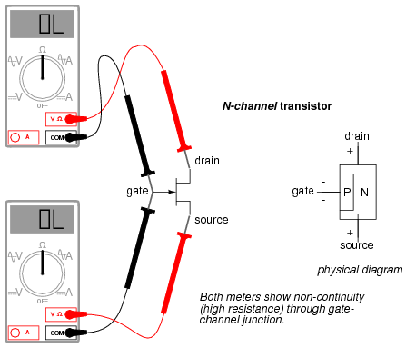
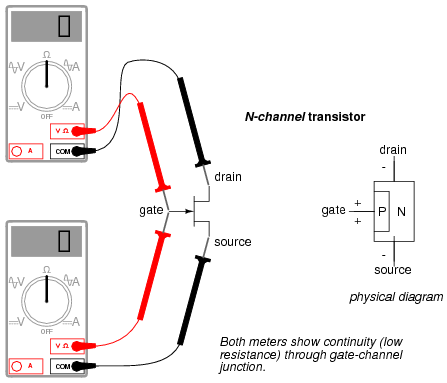
Sin embargo, probar la continuidad a través del canal de drenaje-fuente es otra cuestión. ¿Recuerda de la última sección cómo una carga almacenada a través de la capacitancia de la unión PN del canal de puerta podría mantener el JFET en un estado comprimido sin que se aplique ningún voltaje externo a través de él? ¡Esto puede ocurrir incluso cuando sostienes el JFET en tu mano para probarlo! En consecuencia, cualquier lectura del medidor de continuidad a través de ese canal será impredecible, ya que no necesariamente se sabe si la unión puerta-canal está almacenando una carga. Por supuesto, si sabe de antemano qué terminales del dispositivo son la compuerta, la fuente y el drenaje, puede conectar un cable de puente entre la compuerta y la fuente para eliminar cualquier carga almacenada y luego proceder a probar la continuidad fuente-drenaje sin problemas. Sin embargo, si ustednosaber qué terminales son cuáles, la imprevisibilidad de la conexión fuente-drenaje puede confundir su determinación de la identidad del terminal.
Una buena estrategia a seguir al probar un JFET es insertar las clavijas del transistor en espuma antiestática (el material utilizado para enviar y almacenar componentes electrónicos sensibles a la estática) justo antes de la prueba. La conductividad de la espuma creará una conexión resistiva entre todos los terminales del transistor cuando se inserte. Esta conexión garantizará que todo el voltaje residual acumulado a través de la unión PN del canal de puerta se neutralice, "abriendo" así el canal para una prueba precisa del medidor de continuidad entre la fuente y el drenaje.
Dado que el canal JFET es una pieza única e ininterrumpida de material semiconductor, generalmente no hay diferencia entre los terminales de fuente y drenaje. Una verificación de resistencia desde la fuente hasta el drenaje debería arrojar el mismo valor que una verificación desde el drenaje hasta la fuente. Esta resistencia debe ser relativamente baja (unos pocos cientos de ohmios como máximo) cuando el voltaje de la unión PN puerta-fuente es cero. Al aplicar un voltaje de polarización inversa entre la puerta y la fuente, el pellizco del canal debería ser evidente mediante una mayor lectura de resistencia en el medidor.
Operación en modo activo
Los JFET, al igual que los transistores bipolares, pueden "estrangular" la corriente en un modo entre corte y saturación llamadoactivomodo. Para comprender mejor el funcionamiento de JFET, configuremos una simulación SPICE similar a la utilizada para explorar la función básica del transistor bipolar:
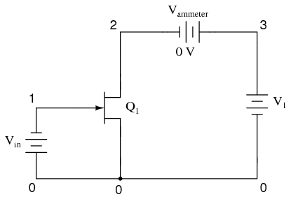
jfet simulation vin 0 1 dc 1 j1 2 1 0 mod1 vammeter 3 2 dc 0 v1 3 0 dc .model mod1 njf .dc v1 0 2 0.05 .plot dc i(vammeter) .end
Tenga en cuenta que el transistor etiquetado como "Q1" en el esquema está representado en la netlist de SPICE comoj1. Aunque todos los tipos de transistores se denominan comúnmente dispositivos "Q" en los esquemas de circuitos, al igual que las resistencias se denominan "R" y los capacitores "C", es necesario decirle a SPICE qué tipo de transistor es mediante una designación de letra diferente:qpara transistores de unión bipolar, yjpara transistores de efecto de campo de unión.
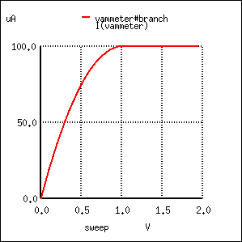
Aquí, la señal de control es un voltaje constante de 1 voltio, aplicado con negativo hacia la puerta JFET y positivo hacia la fuente JFET, para polarizar inversamente la unión PN. En la primera simulación BJT del capítulo 4, se usó una fuente de corriente constante de 20 µA para la señal de control, pero recuerde que un JFET es uncontrolado por voltajedispositivo, no un dispositivo controlado por corriente como el transistor de unión bipolar.
Al igual que el BJT, el JFET tiende a regular la corriente controlada a un nivel fijo por encima de un cierto voltaje de suministro de energía, sin importar cuán alto pueda subir ese voltaje. Por supuesto, esta regulación de corriente tiene límites en la vida real: ningún transistor puede soportar un voltaje infinito de una fuente de energía, y con suficiente voltaje de drenaje a fuente, el transistor se "romperá" y la corriente de drenaje aumentará. Pero dentro de los límites operativos normales, el JFET mantiene la corriente de drenaje en un nivel constante independientemente del voltaje de la fuente de alimentación. Para verificar esto, ejecutaremos otra simulación por computadora, esta vez barriendo el voltaje de la fuente de alimentación (V1) hasta 50 voltios:
jfet simulation vin 0 1 dc 1 j1 2 1 0 mod1 vammeter 3 2 dc 0 v1 3 0 dc .model mod1 njf .dc v1 0 50 2 .plot dc i(vammeter) .end
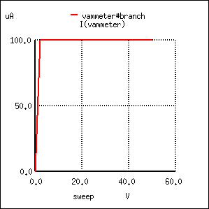
Efectivamente, la corriente de drenaje permanece estable en un valor de 100 µA (1.000E-04 amperios) sin importar qué tan alto se ajuste el voltaje de la fuente de alimentación.
Debido a que el voltaje de entrada tiene control sobre la constricción del canal del JFET, tiene sentido que cambiar este voltaje sea la única acción capaz de alterar el punto de regulación de corriente para el JFET, al igual que cambiar la corriente base en un BJT es la única acción capaz de alterar la regulación de la corriente del colector. Disminuyamos el voltaje de entrada de 1 voltio a 0,5 voltios y veamos qué sucede:
jfet simulation vin 0 1 dc 0.5 j1 2 1 0 mod1 vammeter 3 2 dc 0 v1 3 0 dc .model mod1 njf .dc v1 0 50 2 .plot dc i(vammeter) .end
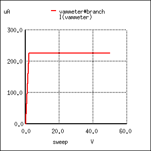
Como era de esperar, la corriente de drenaje es mayor ahora que en la simulación anterior. Con menos voltaje de polarización inversa aplicado a través de la unión puerta-fuente, la región de agotamiento no es tan amplia como lo era antes, "abriendo" así el canal para los portadores de carga y aumentando la cifra de corriente de drenaje.
Tenga en cuenta, sin embargo, el valor real de esta nueva cifra de corriente: 225 µA (2.250E-04 amperios). La última simulación mostró una corriente de drenaje de 100 µA, y eso fue con un voltaje puerta-fuente de 1 voltio. Ahora que hemos reducido el voltaje de control en un factor de 2 (de 1 voltio a 0,5 voltios), la corriente de drenaje aumentó, ¡pero no en la misma proporción de 2:1! Reduzcamos el voltaje de nuestra puerta-fuente una vez más en otro factor de 2 (hasta 0,25 voltios) y veamos qué sucede:
jfet simulation vin 0 1 dc 0.25 j1 2 1 0 mod1 vammeter 3 2 dc 0 v1 3 0 dc .model mod1 njf .dc v1 0 50 2 .plot dc i(vammeter) .end
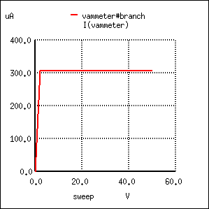
Con el voltaje puerta-fuente establecido en 0,25 voltios, la mitad de lo que era antes, la corriente de drenaje es 306,3 µA. Aunque esto sigue siendo un aumento con respecto a los 225 µA de la simulación anterior, no esproporcionalal cambio del voltaje de control.
Para obtener una mejor comprensión de lo que está sucediendo aquí, deberíamos ejecutar un tipo diferente de simulación: una que mantenga constante el voltaje de la fuente de alimentación y en su lugar varíe la señal (voltaje) de control. Cuando se ejecutó este tipo de simulación en un BJT, el resultado fue un gráfico de línea recta que muestra cómo la relación corriente de entrada/corriente de salida de un BJT es lineal. Veamos qué tipo de relación exhibe un JFET:
jfet simulation vin 0 1 dc j1 2 1 0 mod1 vammeter 3 2 dc 0 v1 3 0 dc 25 .model mod1 njf .dc vin 0 2 0.1 .plot dc i(vammeter) .end
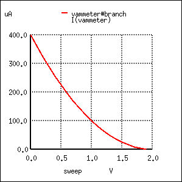
Esta simulación revela directamente una característica importante del transistor de efecto de campo de unión: el efecto de control del voltaje de la puerta sobre la corriente de drenaje esno lineal. Observe cómo la corriente de drenaje no disminuye linealmente a medida que aumenta el voltaje de la puerta-fuente. Con el transistor de unión bipolar, la corriente del colector era directamente proporcional a la corriente de la base: la señal de salida seguía proporcionalmente a la señal de entrada. ¡No es así con el JFET! La señal de control (voltaje puerta-fuente) tiene cada vez menos efecto sobre la corriente de drenaje a medida que se acerca al corte. En esta simulación, la mayor parte de la acción de control (75 por ciento de la disminución de la corriente de drenaje, de 400 µA a 100 µA) tiene lugar dentro del primer voltio del voltaje de la fuente de la puerta (de 0 a 1 voltio), mientras que el 25 por ciento restante de la reducción de la corriente de drenaje requiere otro voltio entero de señal de entrada. El corte se produce en la entrada de 2 voltios.
La linealidad es generalmente importante para un transistor porque le permite amplificar fielmente una forma de onda sin distorsionarla. Si un transistor no es lineal en su amplificación de entrada/salida, la forma de la onda de entrada se corromperá de alguna manera, lo que provocará la producción de armónicos en la señal de salida. La única linealidad temporal esnotLo importante en un circuito de transistores es cuando se opera en los límites extremos de corte y saturación (apagado y encendido, respectivamente, como un interruptor).
Las curvas características de un JFET muestran el mismo comportamiento de regulación de corriente que las de un BJT, y la no linealidad entre el voltaje de puerta a fuente y la corriente de drenaje es evidente en los espacios verticales desproporcionados entre las curvas:
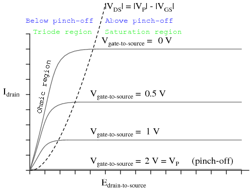
Para comprender mejor el comportamiento de regulación de corriente del JFET, podría resultar útil dibujar un modelo compuesto por componentes más simples y comunes, tal como lo hicimos para el BJT:
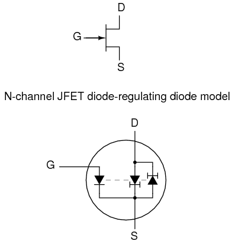
En el caso del JFET, es elVoltajea través del diodo de fuente de puerta con polarización inversa que establece el punto de regulación de corriente para el par de diodos de corriente constante. En el modelo se incluye un par de diodos opuestos de corriente constante para facilitar la corriente en cualquier dirección entre la fuente y el drenaje, una característica posible gracias a la naturaleza unipolar del canal. Sin uniones PN para que atraviese la corriente fuente-drenaje, no hay sensibilidad de polaridad en la corriente controlada. Por esta razón, los JFET a menudo se denominanbilateraldispositivos.
Un contraste de las curvas características del JFET con las curvas de un transistor bipolar revela una diferencia notable: la porción lineal (recta) del área no horizontal de cada curva es sorprendentemente larga en comparación con las porciones respectivas de las curvas características de un BJT:
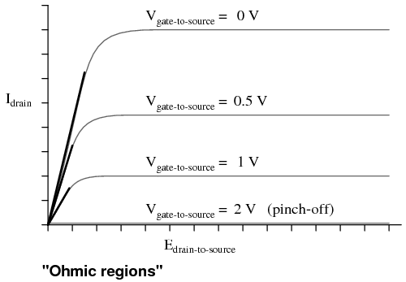
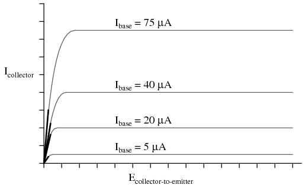
Un transistor JFET operado en elregión del triodotiende a actuar de manera muy similar a una resistencia simple medida desde el drenaje hasta la fuente. Como todas las resistencias simples, su gráfica corriente/voltaje es una línea recta. Por esta razón, la porción de la región triodo (no horizontal) de la curva característica de un JFET a veces se denominaregión óhmica. En este modo de operación donde no hay suficiente voltaje de drenaje a fuente para llevar la corriente de drenaje hasta el punto regulado, la corriente de drenaje es directamente proporcional al voltaje de drenaje a fuente. En un circuito cuidadosamente diseñado, este fenómeno puede aprovecharse. Operado en esta región de la curva, el JFET actúa como un voltaje controladoresistenciaen lugar de un control de voltajeregulador de corriente, y el modelo apropiado para el transistor es diferente:
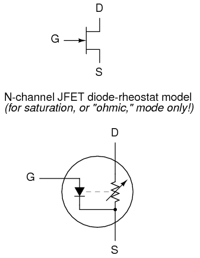
Aquí y sólo aquí el modelo de reóstato (resistencia variable) de un transistor es exacto. Debe recordarse, sin embargo, que este modelo de transistor es válido sólo para un rango estrecho de operación: cuando está extremadamente saturado (mucho menos voltaje aplicado entre el drenaje y la fuente que el que se necesita para lograr una corriente regulada completa a través del drenaje). La cantidad de resistencia (medida en ohmios) entre el drenaje y la fuente en este modo está controlada por la cantidad de voltaje de polarización inversa que se aplica entre la puerta y la fuente. Cuanto menor sea el voltaje de la puerta a la fuente, menor será la resistencia (línea más pronunciada en el gráfico).
Porque los JFET sonVoltaje-reguladores de corriente controlados (al menos cuando se les permite operar en su estado activo), su factor de amplificación inherente no se puede expresar como una relación sin unidades como ocurre con los BJT. En otras palabras, no existe una relación β para un JFET. Esto es válido para todos los dispositivos activos controlados por voltaje, incluidos otros tipos de transistores de efecto de campo e incluso tubos de electrones. Sin embargo, existe una expresión de corriente controlada (drenaje) para controlar el voltaje (puerta-fuente), y se llamatransconductancia. Su unidad es Siemens, la misma unidad de conductancia (anteriormente conocida comomho).
¿Por qué esta elección de unidades? Porque la ecuación adopta la forma general de corriente (señal de salida) dividida por voltaje (señal de entrada).
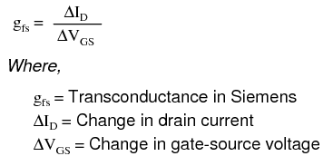
Desafortunadamente, el valor de transconductancia para cualquier JFET no es una cantidad estable: varía significativamente con la cantidad de voltaje de control de puerta a fuente aplicado al transistor. Como vimos en las simulaciones de SPICE, la corriente de drenaje no cambia proporcionalmente con los cambios en el voltaje de la puerta-fuente. Para calcular la corriente de drenaje para cualquier voltaje de fuente de puerta determinado, existe otra ecuación que se puede usar. Obviamente es no lineal tras la inspección (tenga en cuenta la potencia de 2), lo que refleja el comportamiento no lineal que ya hemos experimentado en la simulación:
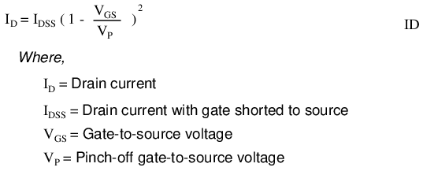
- REVISAR:
- En sus modos activos, los JFET regulan la corriente de drenaje de acuerdo con la cantidad de voltaje de polarización inversa aplicada entre la puerta y la fuente, de manera similar a como un BJT regula la corriente del colector de acuerdo con la corriente de base. La relación matemática entre la corriente de drenaje (salida) y el voltaje de puerta a fuente (entrada) se llamatransconductancia, y se mide en unidades de Siemens.
- La relación entre el voltaje puerta-fuente (control) y la corriente de drenaje (controlada) no es lineal: a medida que disminuye el voltaje puerta-fuente, la corriente de drenaje aumenta exponencialmente. Es decir, la transconductancia de un JFET no es constante en su rango de operación.
- En su región de triodo, los JFET regulan el drenaje a la fuente.resistenciade acuerdo con la cantidad de voltaje de polarización inversa aplicada entre la puerta y la fuente. En otras palabras, actúan como resistencias controladas por voltaje.
El amplificador de fuente común
*** PENDIENTE ***
- REVISAR:
El amplificador de drenaje común
*** PENDIENTE ***
- REVISAR:
El amplificador de compuerta común
*** PENDIENTE ***
- REVISAR:
Técnicas de polarización
*** PENDIENTE ***
- REVISAR:
Especificaciones y encapsulados de transistores
*** PENDIENTE ***
- REVISAR:
JFET quirks -- PENDING
*** PENDIENTE ***
- REVISAR:
Lecciones en circuitos eléctricoscopyright (C) 2000-2023 Tony R. Kuphaldt, según los términos y condiciones delCC BY License.